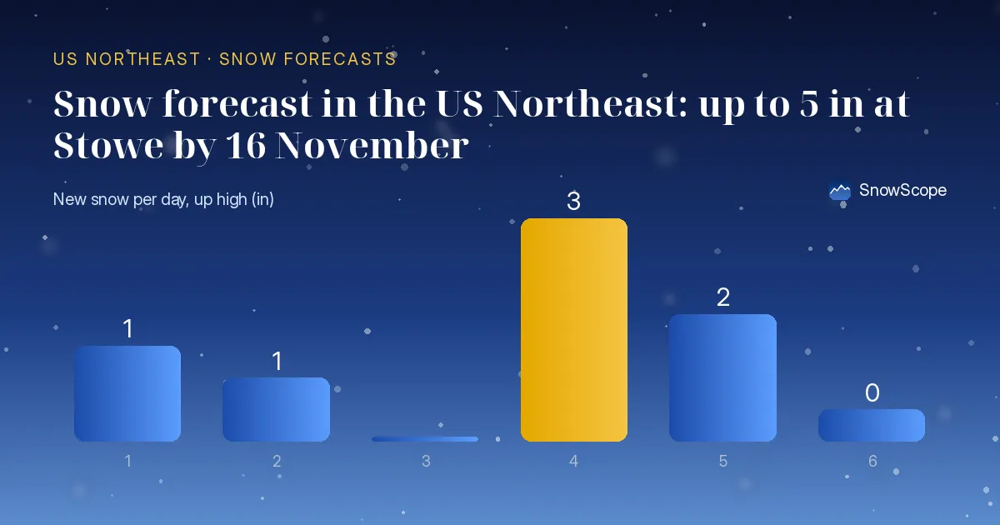
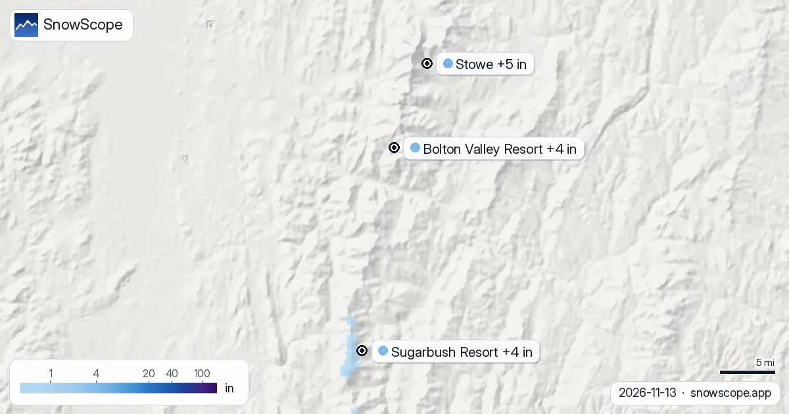

Snow forecast in the US Northeast: up to 5 in at Stowe by 16 November
The next three days will bring snow to the Northeast, with Stowe leading at 5 in (12 cm) by 16 November. The best snow will land on the highest ground—expect 4 in (11 cm) at Stowe's top and similar amounts at Bolton Valley Resort and Sugarbush Resort where elevations top 950 m (3,100 ft).
See the live snow forecast for Stowe in the SnowScope appSnow depth, powder alerts and the 3D map, free.
Where the snow falls heaviest
Saturday 14 November is the peak day across all three resorts. Stowe will gain 3 in (7 cm), Bolton Valley Resort 2 in (6 cm), and Sugarbush Resort 2 in (4 cm). Sunday 15 November brings more: Stowe adds 1 in (4 cm), Bolton Valley Resort 2 in (4 cm), and Sugarbush Resort 2 in (5 cm). The highest slopes catch the most—Stowe's summit at 1,112 m (3,650 ft) will see 4 in (11 cm) total, while the base at 400 m (1,310 ft) stays bare.
Height matters most. At Bolton Valley Resort, the mid-slope at 712 m (2,336 ft) will collect 5 in (12 cm) over the forecast window, while the base stays dry. At Sugarbush Resort, the top at 1,238 m (4,062 ft) has 1 in (3 cm) now and will gain 4 in (10 cm). Ride the upper lifts if you want to ski fresh snow.
| Resort | Snow depth | New snow, 72 h | Coming, next days | Top |
|---|---|---|---|---|
| Stowe | 0 in (1 cm) | 2 in (4 cm) | 5 in (12 cm) | 3,648 ft (1,112 m) |
| Bolton Valley Resort | 0 in (0 cm) | 1 in (3 cm) | 4 in (11 cm) | 3,117 ft (950 m) |
| Sugarbush Resort | 1 in (3 cm) | 2 in (6 cm) | 4 in (10 cm) | 4,062 ft (1,238 m) |

Wet snow below, dry snow above
On Saturday the freezing level swings from 689 ft (210 m) to 1,870 ft (570 m) at Stowe. This means snow will be heavy and wet low down—near the base at 400 m (1,310 ft)—while the upper mountain stays wintry. Bolton Valley Resort faces the same split: the freezing level climbs from 722 ft (220 m) to 1,706 ft (520 m), so lower runs will be sloppy but upper slopes will hold proper snow.
By Sunday the freezing level settles higher. At Stowe and Bolton Valley Resort, it ranges between 1,148 ft (350 m) and 1,673 ft (510 m), so the bottom half of each resort turns wet. At Sugarbush Resort, where the top reaches 1,238 m (4,062 ft), Sunday's range of 1,181 ft (360 m) to 1,772 ft (540 m) means only the summit stays dry. Plan to ski early and high.

How this Friday compares to past winters
Three days ago the Northeast had almost no snow cover—just 93 sq mi (240 km²) on 11 November. Today 28 of the 112 resorts have at least some snow, and 5,568 sq mi (14,420 km²) is white. After the weekend, that area drops to 2,753 sq mi (7,130 km²) as lower elevations melt.
At Bolton Valley Resort's mid-slope (712 m), today's thin cover sits at the edge of what past winters held. Looking back at 46 past winters on this date, Bolton Valley Resort is deeper than 15 of them—a sign that this year's start is running thin. The incoming snow will help, but you are still early in the season.
Timing and snow quality
Saturday brings the bulk of the new snow. If you can ski Saturday afternoon or Sunday morning, the snow will still be fresh. By Sunday evening, sun and skier traffic will begin to soften and settle the new cover, especially on south-facing slopes and lower elevations.
Monday 16 November delivers only 0.5 in (1 cm) across the region—just a dusting. The main event ends by then. After Monday, warmer air moves in and melt accelerates, so the window to enjoy this snow is narrow: plan for Saturday to Monday.
What the numbers hide
These are forecast averages for the resort area. The actual slope you ski may differ. Snow settles unevenly—wind-loaded gullies gather more, exposed ridges less. Rocks close to the surface may poke through thin snow. Field experience teaches that the map is a guide; the mountain has the final say.
Check the SnowScope map again on Saturday morning before you drive. Forecasts a few days out can shift. The app will show you exactly where fresh snow has landed.
Tips for skiers
- Ride the upper chairs on Saturday and Sunday: the top 500 m (1,600 ft) of each resort will hold the best snow, while the base and lower mid-slopes stay wet or bare.
- Ski early: fresh snow softens fast once the sun hits it. Saturday and Sunday mornings offer the best conditions before afternoon melt.
- Expect a narrow window: by Monday the main snow event ends. Plan your trip for the weekend.
- Before you leave the piste, check the official avalanche bulletin for the Northeast. New snow on steep terrain always carries risk.
- Turn on powder alerts in the SnowScope app to track when snow reaches your chosen resort.
About these numbers
Resort snow depths are the deepest snow on the resort's upper slopes on the date shown; they are estimates for an area, not a measurement at one point. Forecasts can change. Always read the official avalanche bulletin before going off-piste.
Official avalanche bulletins: Mount Washington Avalanche Center
Cite this report
For research, teaching or the press: the numbers and charts are free to reuse under CC BY 4.0 with this citation.
SnowScope (2026), Snow forecast in the US Northeast: up to 5 in at Stowe by 16 November, https://snowscope.app/blog/en/2026/11/us-northeast-stowe-snow-forecast-13-november-2026.html, accessed 2026-11-13
SnowScope (Atlas Labs). (2026, November 13). Snow forecast in the US Northeast: up to 5 in at Stowe by 16 November. SnowScope snow reports. https://snowscope.app/blog/en/2026/11/us-northeast-stowe-snow-forecast-13-november-2026.html
BibTeX
@misc{snowscope2026usnortheaststowesnowfore,
author = {{SnowScope (Atlas Labs)}},
title = {Snow forecast in the US Northeast: up to 5 in at Stowe by 16 November},
year = {2026},
month = nov,
howpublished = {\url{https://snowscope.app/blog/en/2026/11/us-northeast-stowe-snow-forecast-13-november-2026.html}},
note = {Published 2026-11-13 20:06 UTC; accessed 2026-11-13}
}· CC BY 4.0 · Methods, data and tools →
Stowe: snow and temperature by height, this winter vs last (tools) →
Follow Stowe
Free: a message when fresh snow is coming, and the forecast every morning.
More snow reports

Northern Vermont gets its first real snow of the season over the Thanksgiving weekend. Resort by resort, north to south, and what is normal for early December.

On 12 November the 0 °C level in the US Northeast ranges from 591 ft to 4,593 ft. The snow line sits 300 m lower, so rain hits the base at most resorts while upper slopes stay dry.

Magic Mountain Ski Area in southern Vermont sits on thin natural snow. Peak depths at the base are 21 in (54 cm); at the top, 26 in (67 cm). Data from 46 past winters, November 2026.